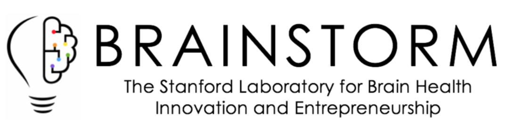
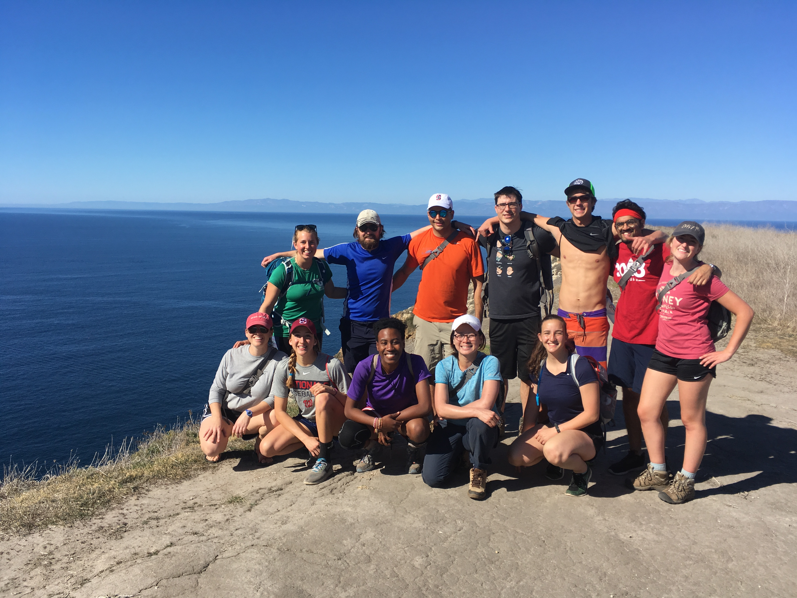
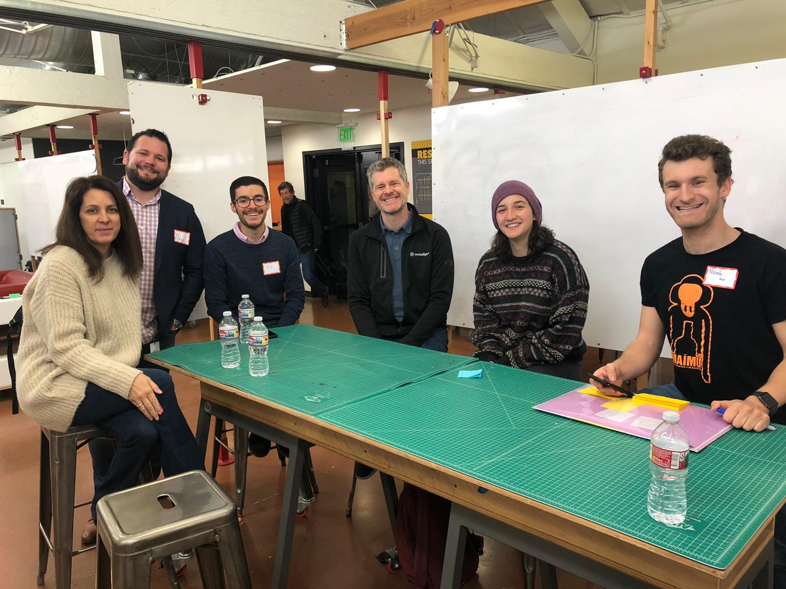

Currently a senior at Stanford University, I am finishing a Bachelor's in Symbolic Systems, with a concentration in Human Computer Interaction, and a Master's in Sustainability Science and Practice. User centered design allows me to do some of my favorite work: understand people, create new technologies, and facilitate teamwork. To me, design is how I can bridge my passions for mental healthcare and sustainability. My Master's will help me design solutions that support human and environmental flourishing, and will send me into the world with strong leadership ability in complex systems. In my spare time, I enjoy outdoor adventures and cheap travel; click here to see a map of where I've been!
andreashulman@gmail.com
Process

Skills
Coursework
Transformative Design, Design Thinking for User Experience Design, Prototyping and Evaluation, Cognition in Interaction Design, Design for a Resilient Mind, Design Impact Master's Project II, Design Impact Master's Project III, Behavior Design, Designing for Neurodiversity, Designing Wellbeing, Design Portfolio Methods
Human Society and Environmental Change, Problem Solving for Social Change, Pursuing Sustainability: Managing Complex Social Environmental Systems
Computer Organization and Systems, Web Applications, Programming Abstractions, The Rhetoric of Humans and Machines, The Social and Economic Impact of Artificial Intelligence, Probability for Computer Scientists, Minds and Machines, Human-Computer Interaction Seminar, Decision Making Under Uncertainty
Leadership and Innovation in Mental Healthcare, Introduction to Social Psychology, Anthropological and Psychiatric Approaches to Mental Illness, Introduction to Cognitive Neuroscience: Computation and Cognition, Emotional Intelligence
First Year Spanish, Accelerated Second-Year Spanish Part I, Spanish Language Tutorial
Interpersonal Learning and Leadership, Outdoor Leadership Practicum, Emotional Intelligence
Mind Matter and Meaning, Evil, Fine-tuning Arguments for God's Existence
Introduction to Linguistics, Introduction to Semantics and Pragmatics
Introduction to Earth Systems, Living Chile: A Land of Extremes
Mathematic Foundations of Computing, Linear Algebra and Differential Calculus of Several Variables
Design Training and Programming Proficiency
User Experience Design, Product Design, Stanford design school methods, Behavior Design, Universal Design, Systems Design, Cognition + Interaction Design
Sketch, Adobe InDesign, Figma, InVision, Microsoft Excel, Trello
Wireframing, Rapid Prototyping, User Flows, Usability Testing, User Interviewing, Design Thinking, Journey Mapping
HTML, CSS, C++, C, JavaScript, Python, Java, Git, Swift, UNIX, Node.js
Professional Experience
Exhibit Development Intern {December 2019}
Designed and determined new museum theme and process for exhibit development
User Experience Design Intern {Summer 2019}
Designed and determined features for Hear and Sleep products; hardware and software
RFID Implementation Intern {Summer 2018}
RFID testing, retail solutions, pair-programmed using computer vision and object trackingRecommendation
Junior Fellow

Creating a global network of people and companies interested in mental health technologies
IT Intern {Summers 2014-2016}
Revamped inventory database, fostered iPad program school-wide Recommendation
Research
Helped design an online eating disorder rehabilitation program
ISRII Poster
Programmed and designed experiments studying generalization
Lab Site
Bayesian modeling for scene-level Adelson illusion
Paper
Breathing entrainment for stress management experiment design
Paper
Leadership

Stanford Outdoor Education
Trip Leader
I work with one or two coleaders at a time to introduce fellow students to the outdoors. I most enjoy backpacking in new places.

Align Tech
Design Leader
With my partner, I led a team at Align Tech. We taught design thinking through finding solutions to their invoice and customer service issues.
Purpose
Each of my projects represents just one specific solution to a complex problem. I empathize and iterate often, taking on issues within both wellness and sustainability. I deeply enjoy collaboration on diverse teams with passionate, open, kind people. My work is a place in which I am constantly learning, exploring a group of people and what surrounds them. Utilizing diverging and converging processes, my projects have tremendous potential to make a positive impact as they reach for the key underlying problems from substantial data. I have designed under ever-changing constraints while attending to peripheral stakeholders. Overall, my work is centered around the people and systems it aims to support, with my process shining through.
I dedicate my work to my childhood hero and best friend. Mental illness is an immensely difficult fight that can affect us all.
Where Am I Now?
I am currently looking for work until I return to Stanford in January to finish my degrees and graduate in March 2021.